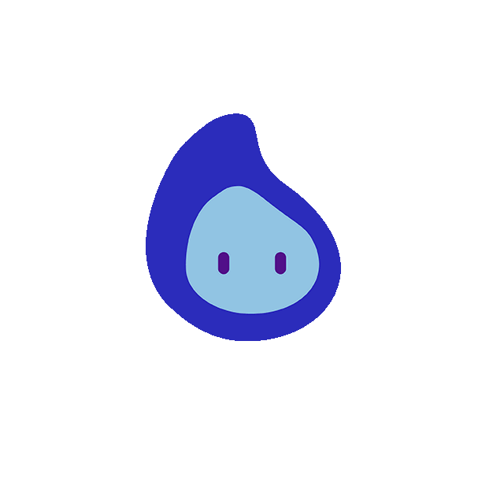

Checking connection...
Options
Map Types
Streets
Light
Dark
Outdoors
Satellite
Themes
Dark
Light
Show coordinates on map
Points
Click on the map to add a point
Awaiting Arduino...
☰
Fly to point
Export
Delete
 Fly to point
Fly to point
Fly to point
Fly to point